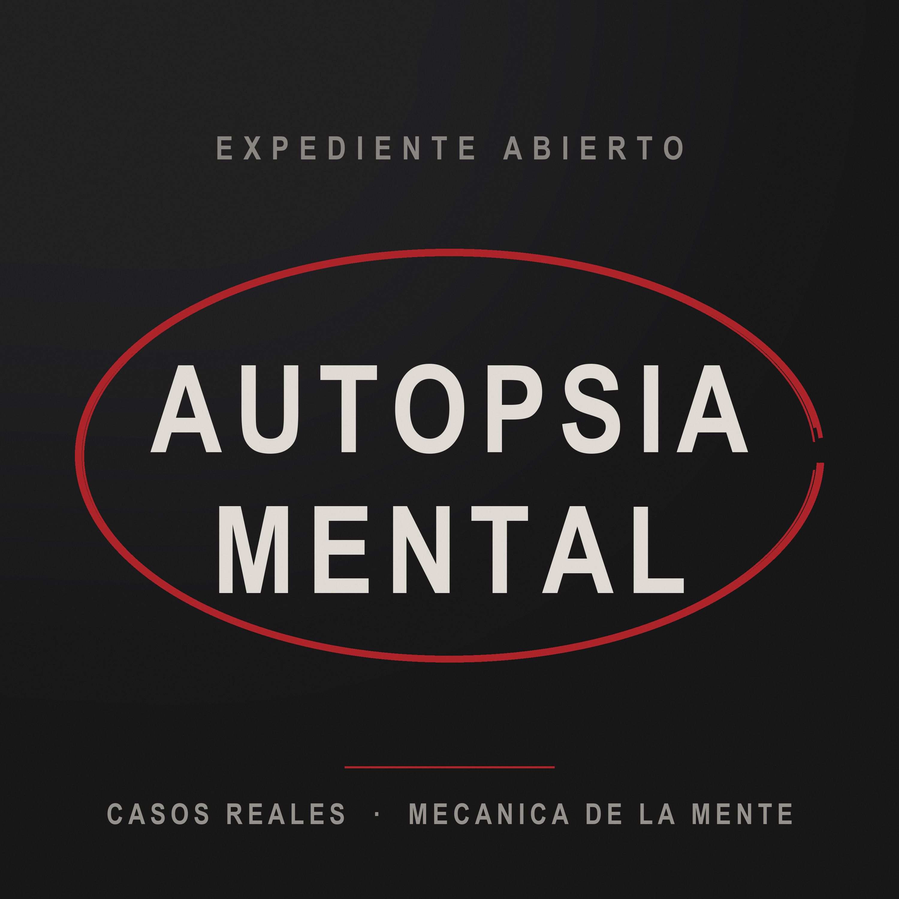

Martes y viernes · Espanol
Un caso real por dia. Tomas tiene veinticinco anios y lo investiga. Nieve tiene setenta y pico y vivio la epoca. Veinte minutos, martes y viernes.
Feed RSS Como se produceExplicamos como se fabrica la decision que termina en uno. El caso es la excusa; el mecanismo es el producto.
El corre, ella frena. El trae el dato, ella trae la persona que estaba detras. Veinte minutos de una sola voz cansan; esta conversacion no.
Sentencia firme, dominio publico o protagonistas fallecidos. Si el expediente no aclara un dato, se dice que no lo aclara.
Ningun paso requiere una persona. El sistema tiene un guardarrail de consumo: consulta la cuota de creditos antes de sintetizar y aborta si el guion se pasa del presupuesto.